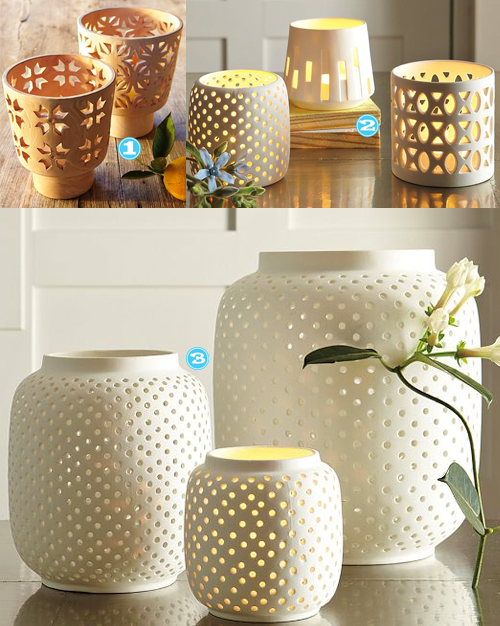

The minute I saw this picture of these hurricanes combined with the somewhat Spring weather we’ve been having it made me want to set this scene up in my backyard, kick back with a glass of wine and just chill out. Â Then I snapped back into reality and realized that probably by next week it will be hotter than the fiery pits of hell outside here in Texas and also that I can’t drink yet because I haven’t finished growing this baby. Â But a girl can dream right?
- Terracotta Cutout Hurricanes, West Elm
- Porcelain Tealight Holders, West Elm
- Porcelain Hurricanes, West Elm


Recent Comments